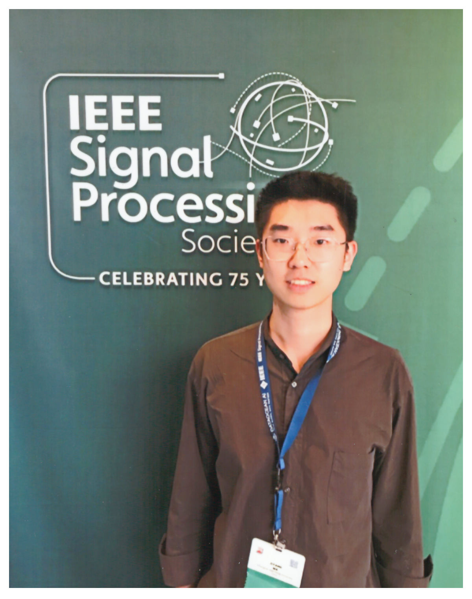

Ziyang Ma (马子阳)
|  | Ph.D. student, |
Biography
Hiüëã nice to meet you!
Currently I am a Ph.D. student of Shanghai Jiao Tong University (SJTU) and SJTU Artificial Intelligence Institute, and a member in Cross Media (X-) Language Intelligence Lab (X-LANCE) of the Department of Computer Science and Engineering, co-supervised by Prof. Xie Chen, Yanmin Qian and working closely with Prof. Kai Yu. As the first Ph.D. supervised by Prof. Chen, I will try my best in the next five exciting years! üí™
I was a research assistant at InteLligent media research center (iLearn), working closely with Prof. Xuemeng Song and Liqiang Nie during my undergraduate years.
My research usually follows the KISS philosophy. My recent work focuses on speech, language, audio and music processing with Self-Supervised Learning (SSL) and Large Language Model (LLM). If you are also interested, please feel free to contact me.
Education
Ph.D., Computer Science and Engineering, Shanghai Jiao Tong University, 2022.09-Now
B.E., Computer Science and Technology, Shandong University, 2018.09-2022.06
Interests
Self-Supervised Learning
Speech Processing
Natural Language Processing
Multimedia and Multimodal
NEWS
[2023.9] 2 papers were accpeted by IEEE ASRU2023.
[2023.8]
 MT4SSL was nominated in ISCA Interspeech Best Student Paper Shortlist. Congrats!
MT4SSL was nominated in ISCA Interspeech Best Student Paper Shortlist. Congrats![2023.5] 4 papers were accpeted by ISCA INTERSPEECH2023.
[2023.2] 2 papers were accpeted by IEEE ICASSP2023.
[2022.11] Check out our Repo for MT4SSL, a multi-task learning framework for self-supervised learning.
[2022.10] Check out our Repo for Few-Shot Learning for Talking Face System. We train a talking face with only ten randomly picked utterances for about one minute!
[2022.09] We won 3rd place in Avatar Track of AIWIN, held by WAIC2022.[Report][Invited Talk]
[2022.09] I start to pursue my Ph.D. at Shanghai Jiao Tong University.
[2022.06] I graduated with a Bachelor's Honours Degree! Thanks to everyone who helped me along the way and to myself.
[2022.05] Check out our Repo for Self-Supervised Learning and Pre-Training on Speech.
Research
Publications
Thanks to all the collaborators for their great work!
Models and Methods for Speech SSL
Guanrou Yang, Ziyang Ma, Zhisheng Zheng, Yakun Song, Zhikang Niu, Xie Chen*.
Fast-HuBERT: An Efficient Training Framework for Self-Supervised Speech Representation Learning.
in IEEE Automatic Speech Recognition and Understanding Workshop, 2023.
Ziyang Ma, Zhisheng Zheng, Guanrou Yang, Yu Wang, Chao Zhang, Xie Chen*.
Pushing the Limits of Unsupervised Unit Discovery for SSL Speech Representation.
in INTERSPEECH, 2023.
Ziyang Ma, Zhisheng Zheng, Changli Tang, Yujin Wang, Xie Chen*.
MT4SSL: Boosting Self-Supervised Speech Representation Learning by Integrating Multiple Targets.
Oral & Best Student Paper Shortlist in INTERSPEECH, 2023.
Zhuoyuan Yao, Shuo Ren, Sanyuan Chen, Ziyang Ma, Pengcheng Guo, Lei Xie*.
TESSP: Text-Enhanced Self-Supervised Speech Pre-Training.
in arXiv, 2022.
Applications on Speech SSL
Ziyang Ma, Wen Wu, Zhisheng Zheng, Yiwei Guo, Qian Chen, Shiliang Zhang, Xie Chen*.
Leveraging Speech PTM, Text LLM, and Emotional TTS for Speech Emotion Recognition.
in arXiv, 2023.
Yifan Yang, Feiyu Shen, Chenpeng Du, Ziyang Ma, Kai Yu, Daniel Povey*, Xie Chen*.
Towards Universal Speech Discrete Tokens: A Case Study for ASR and TTS.
in arXiv, 2023.
Yujin Wang, Changli Tang, Ziyang Ma, Zhisheng Zheng, Xie Chen, Weiqiang Zhang*.
Exploring Effective Distillation of Self-Supervised Speech Models for Automatic Speech Recognition.
in IEEE Automatic Speech Recognition and Understanding Workshop, 2023.
Zhisheng Zheng, Ziyang Ma, Yu Wang, Xie Chen*.
Unsupervised Active Learning: Optimizing Labeling Cost-Effectiveness for Automatic Speech Recognition.
in INTERSPEECH, 2023.
Xie Chen*, Ziyang Ma, Changli Tang, Yujin Wang, Zhisheng Zheng.
Front-End Adapter: Adapting Front-End Input of Speech based Self-Supervised Learning for Speech Recognition.
in IEEE International Conference on Acoustics, Speech and Signal Processing, 2023.
Speech Synthesis and Generation
Yiwei Guo, Chenpeng Du, Ziyang Ma, Xie Chen, Kai Yu*.
VoiceFlow: Efficient Text-to-Speech with Rectified Flow Matching.
in arXiv, 2023.
Zheng Liang, Zheshu Song, Ziyang Ma, Chenpeng Du, Kai Yu, Xie Chen*.
Improving Code-Switching and Name Entity Recognition in ASR with Speech Editing based Data Augmentation.
in INTERSPEECH, 2023.
Multimedia and Multimodal
Qi Chen, Ziyang Ma, Tao Liu, Xu Tan, Qu Lu, Kai Yu, Xie Chen*.
Improving Few-Shot Learning for Talking Face System with TTS Data Augmentation.
in IEEE International Conference on Acoustics, Speech and Signal Processing, 2023.
Ziyang Ma, Xianjing Han, Xuemeng Song*, Yiran Cui, Liqiang Nie.
Hierarchical deep residual reasoning for temporal moment localization.
Oral in ACM Multimedia Asia, 2021.
Note: * indicates the corresponding author.
Experiences
Research Intern, NLC Group, Microsoft Research Asia(MSRA), 2022.02-2022.08
Investigate joint pre-training of speech and text to help improve the accuracy of ASR and other downstream tasks.
Led by Furu Wei, supervised by Shuo Ren and Shujie Liu, and working closely with Yu Wu and Long Zhou.
Research Intern, Video Group, MEGVII Research, 2021.04-2021.06
Investigate re-identification of vehicle with Transformer architecture.
Supervised by Chi Zhang.
Research Assistant, InteLligent media research center (iLearn), Shandong University, 2020.09-2021.09
My work focused on temporal moment localization in untrimmed videos.
Supervised by Xuemeng Song and Liqiang Nie.
Academic Service
Reviewer
IEEE International Conference on Acoustics, Speech and Signal Processing (IEEE ICASSP)
AAAI Conference on Artificial Intelligence
ACM International Conference on Multimedia (ACM MM)
Accomplishments
Awards
Excellent Graduate, Department of Education, Shandong Province, China, 2022.06
"Intelligent Pedestal" Scholarship, Huawei, 2021.12
SIGMM Student Travel Grant, ACM, 2021.11
National Scholarship, Ministry of Education, China, 2021.10
Competitions
3rd in DCASE2023 Challenge Task4b: Sound Event Detection with Soft Labels, IEEE AASP Challenge on Detection and Classification of Acoustic Scenes and Events, 2023.06.
3rd in Avatar Track of AIWIN, the 5th World Artificial Intelligence Conference(WAIC2022), Shanghai, China, 2022.09.[Report][Invited Talk]
Finalist(Top 284 in 26112 teams) in Contest in Modeling (MCM), Consortium for Mathematics and Its Application, America, 2021.02
First Prize(Top 293 in 45689 teams) in Contemporary Undergraduate Mathematical Contest in Modeling (CUMCM), China Society for Industrial and Applied Mathematics, China, 2020.09
Activities
[SpeechHome Invited Talk]: INTERSPEECH 2023 Pre-presentation , 2023.07
[AI TIME PhD Debate]: PhD Debate on digital human and metaverse, 2023.01
[Datawhale Invited Talk]: How to conduct audio-driven talking head? An introduction and solution sharing, 2022.11
Member of Datawhale, 2022.09-Now
Teaching Assistant, Computer Science and Technology, Shandong University, 2021.03-2021.06
Member of Elite Class, Computer Science and Technology, Shandong University, 2020.09-2022.06